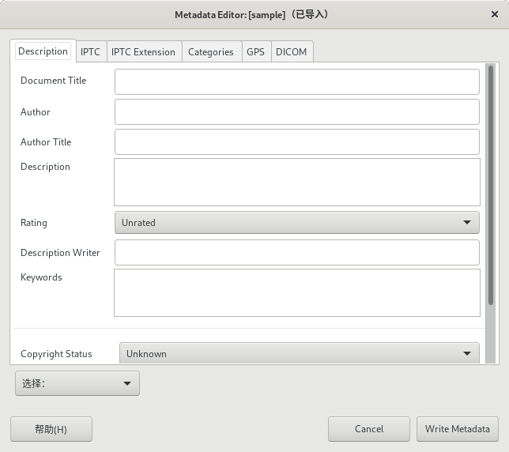

⇨元数据
元数据是关于文档的一些独有数据信息，嵌入在文档中与文档一起保存，可能会涉及到一些隐私内容。
默认情况下，PNG、JPEG、TIFF和WebP文件在导出时会保留元数据。
您可以在菜单【编辑⇨首选项⇨图像导入和导出➡导出方案】中修改这个默认规则；也可以在每次导出文件时，单独设置导出规则。
查看元数据 View Matadata
此命令可以查看图像的元数据信息。
图像⇨元数据⇨查看元数据
Exif
Exif全称是Exchangeable image file format，中文叫可交换图像文件格式，是数码相机使用的格式规范。
Exif是由日本电子工业发展协会(JEIDA)创建的。该规范使用现有的JPEG，TIFF 6.0版和RIFF WAVE文件格式，并添加了特定的元数据标签。JPEG 2000或PNG不支持它。
该规范的2.1版本于1998年6月12日发布，而2.2版本于2002年4月发布。
Exif标记结构取自TIFF文件。TIFF、Exif、TIFF/EP和DCF标准中定义的标签之间存在很大部分的重叠。
XMP
XMP全称是Extensible Metadata Platform，中文叫可扩展元数据平台。
XMP是基于PDF和照片中使用的XML的元数据格式。
IPTC
IPTC全称是International Press Telecommunications Council，中文叫国际出版电信委员会。
IPTC开发了用于文本、图像和其他媒体类型元数据的信息交换模型(Information Interchange Model)。
编辑元数据 Edit Matadata
此命令可以修改图像的元数据。
 图像⇨元数据⇨编辑元数据